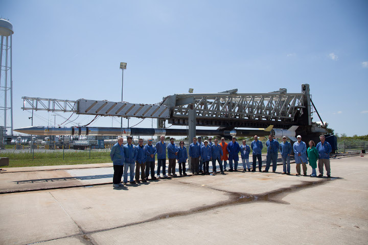
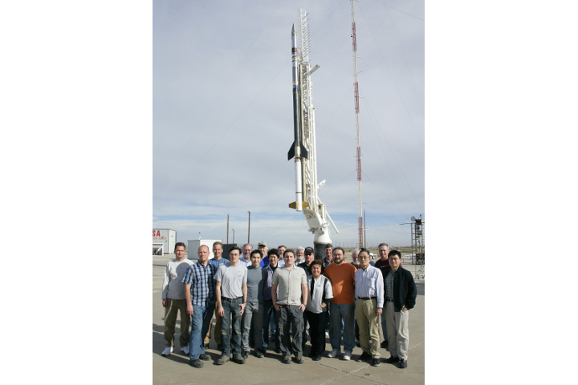
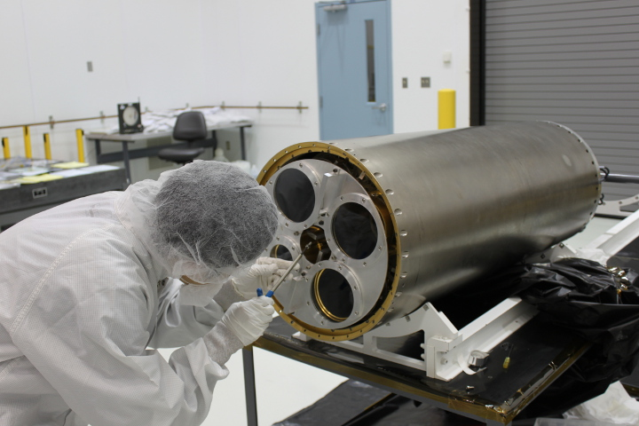

1 / 4

CIBER and Wallops team in front of the Black Brant XII before the last flight. Credit: NASA WFF.
2 / 4

CIBER and WFF/WSMR team circa 2009. Credit: NASA WFF/WSMR.
3 / 4
CIBER last launch on the Black Brant XII. Credit: NASA WFF.
4 / 4

Clean room operation. Credit: NASA WFF.
❮
❯